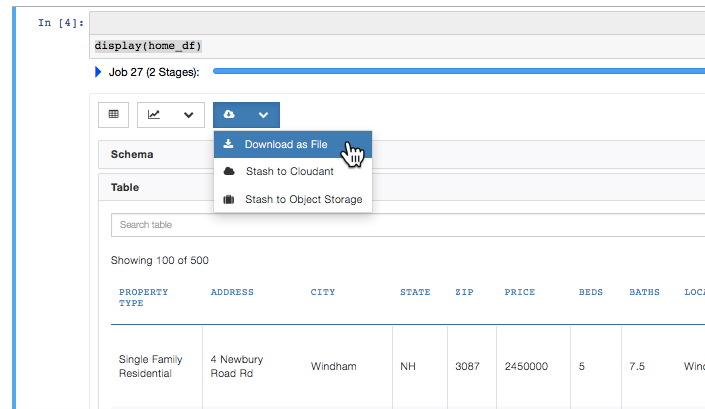
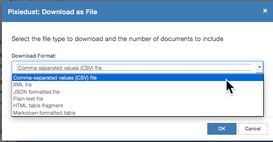

Download Data¶
PixieDust lets you download the data from your notebook. If you’ve been playing with some charts, you can also save and download in SVG format.
Save data to a file¶
You can save a data set to a number of different file formats, including CSV, JSON, XML, and more. You do so within the user interface controls that the display API generates. Read how to run and work with display().
Above the table and charts display, click the Download dropdown arrow. You see the following menu:
Choose Download as File Choose the format you want, and specify the number of records to download.
Click OK.
Export data to Cloudant BETA¶
PixieDust also lets you save directly to a Cloudant database.
Above the table and charts display, click the Download dropdown arrow. You see the following menu:
Choose Stash to Cloudant.
To the right of the Cloudant Connection field, click the + plus button.
Enter your Cloudant database credentials and click OK.
Note
If you get a Too many requests error, you are on the Cloudant Lite plan. The only way to raise limits, is to upgrade your Cloudant plan.
Note
If you get an error that a library is missing, install the cloudant-spark library. This is a manual one-time step that requires a kernel restart. Download the cloudant-spark jar for your Spark version.
For Spark 1.6: https://github.com/cloudant-labs/spark-cloudant/releases/download/v1.6.4/cloudant-spark-v1.6.4-167.jar…
For Spark 2.0: https://github.com/cloudant-labs/spark-cloudant/releases/download/v2.0.0/cloudant-spark-v2.0.0-185.jar
Then create a directory named jars under the home directory with mkdir jars. Copy the cloudant-spark jar file into the newly created directory. Then locate kernel.json file under the directory listing by running command jupyter pixiedust list. Edit kernel.json file and update the variable PYSPARK_SUBMIT_ARGS under env by adding –jars <local_home_directory>/jars/cloudant-spark.jar. "PYSPARK_SUBMIT_ARGS": "--jars /Users/USERNAME/jars/cloudant-spark-v1.6.4-167.jar ....
Save a chart or map in SVG format¶
If you’ve created a sweet chart that you want to save, click the Download SVG button.
Install cloudant-spark library
You can export the data to a Cloudant database. A supporting library cloudant-spark jar is required for the export. This is a manual one-time step that requires a kernel restart. Download cloudant-spark jar file for respective Spark version from:
Spark 1.6: https://github.com/cloudant-labs/spark-cloudant/releases/download/v1.6.4/cloudant-spark-v1.6.4-167.jar
Spark 2.0: https://github.com/cloudant-labs/spark-cloudant/releases/download/v2.0.0/cloudant-spark-v2.0.0-185.jar
Create a directory of your choice for example jars under the home directory.
mkdir jars
Copy the cloudant-spark jar file into the newly created directory.
Locate kernel.json file under the directory listing by running command.
jupyter pixiedust list
Edit kernel.json file and update the variable PYSPARK_SUBMIT_ARGS under env by adding –jars <local_home_directory>/jars/cloudant-spark.jar.
"PYSPARK_SUBMIT_ARGS": "--jars /Users/USERNAME/jars/cloudant-spark-v1.6.4-167.jar ....